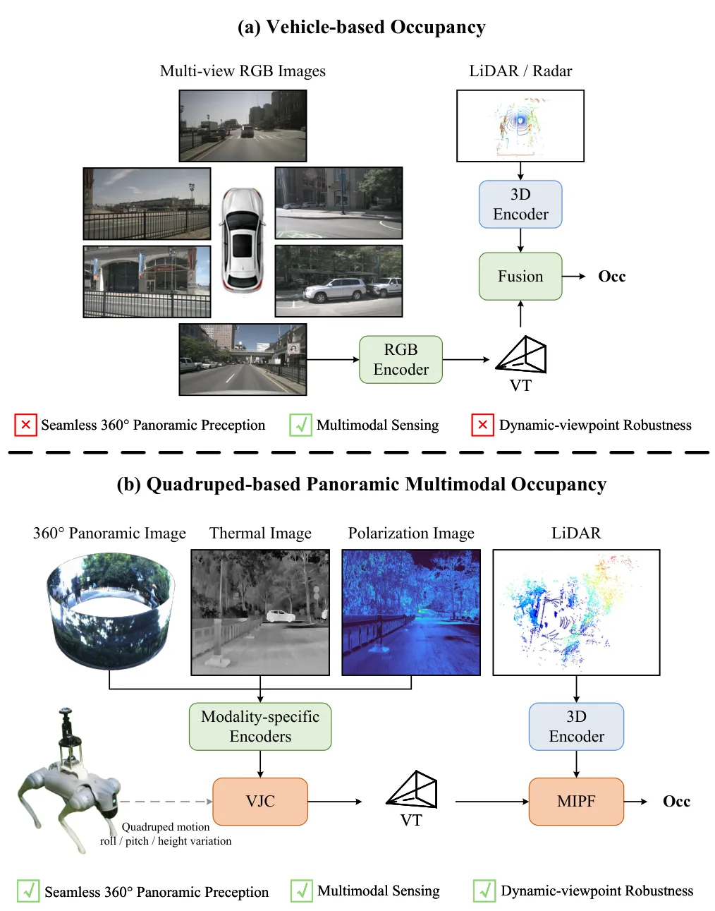
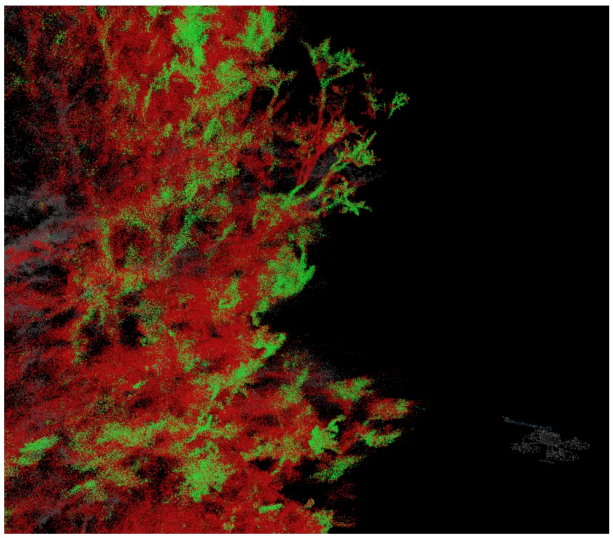

新论文 · 日期 2026-08-10 · score 14 · cs.CV, cs.LG
作者：Junxiong Zhou, Xuechen Li, Chonghao Qiu, Lang Qiao, Xiaowei Jia, Qi Yang, Chishan Zhang, Leikun Yin, Nanshan You, Vipin Kumar, David Mulla, Ce Yang, Zhenong Jin, Licheng Liu
评分 9.4/10
无人机三维重建3D Gaussian SplattingNeRF相机位姿绝对尺度摄影测量
一句话工作总结：用重复 UAV 农田航测同时检验外观、深度、冠层高度、位姿和绝对尺度，揭示 3DGS/NeRF 的渲染优势并不等于测量几何可用。
UAV3DCrop 是面向重复、多角度无人机作物航测的公开三维重建基准，包含 91 个玉米、大豆、小麦和燕麦场景的 88,830 张 5280×3956 RGB 图像，地面采样距离为 3.6–5.8 mm。Track A 比较 NeRF 与 3DGS 场景优化方法在新视图、摄影测量参考深度和冠层高度上的表现；Track B 测试四个预训练前馈模型的零样本相机位姿与几何估计。不同目标的最佳方法并不一致，且四个前馈模型…
Accurate 3D crop monitoring underpins data-driven precision agriculture by enabling field-scale analysis of plant structure, growth dynamics, and management response. Modern 3D reconstruction methods perform s…

新论文 · 日期 2026-08-10 · score 7 · cs.RO, cs.CV, cs.GR
作者：Shuai Fang, Xin Deng, Yuchen Kang, Zhenjiang Li, Jie Chen
评分 8.8/10
Real-to-Sim稀疏视图3D Gaussian Splatting机器人仿真几何代理
一句话工作总结：以机器人可执行域和真实采集几何为双重约束，用可控合成视图补足稀疏采集并联合更新视觉资产与碰撞面。
R2S-EGO 面向机器人 ego trajectory 下的稀疏 real-to-sim 场景构建。方法以 simulator-derived robot proxy 表示行为可执行的查询域，以 capture-anchored geometry proxy 提供场景结构条件；在固定预算内选择支持不足但具有几何条件的视角，生成伪观测并迭代精化视觉资产，同时刷新碰撞表面而保持机器人动力学和控制栈不变。在 Repli…
Real-to-sim (R2S) depends on scene representations that render observations along robot ego trajectories, yet dense multi-view capture limits per-environment real-image capture-count efficiency, and sparse hum…

新论文 · 日期 2026-08-10 · score 6 · eess.IV, cs.CV, cs.LG
作者：Alisa Pesotskaia, Emin Zerman
评分 7.2/10
海事导航地平线检测无人机冰区感知数据集
一句话工作总结：以船载和 UAV 冰区视频量化地平线检测，表明混合方法更稳健，也揭示不同采集平台带来的明显域差异。
IceHorizon 面向冰区海事导航中的低对比、冰体杂波和变化光照，提供由 30 段船载与 8 段无人机视频构成的数据集，并比较四种传统视觉方法和两种深度学习—经典直线检测混合方法。实验从准确率、地平线覆盖和计算性能评估，混合方法整体最准确、可靠；船载图像表现持续优于无人机图像，显示采集特性会显著影响方法性能。代码与数据均已给出公开地址。
Horizon detection in images of ice-covered waters is a challenging problem for maritime navigation due to low contrast between water and sky, cluttered ice structures, and varying illumination conditions. This…

新论文 · 日期 2026-08-10 · score 6 · cs.RO, cs.CV, eess.IV
作者：Guoqiang Zhao, Zhe Yang, Sheng Wu, Fei Teng, Mengfei Duan, Yuanfan Zheng, Kai Luo, Kailun Yang
评分 8/10
语义占据全景视觉多模态融合四足机器人三维感知
一句话工作总结：以垂直抖动补偿和多模态提示融合处理四足机器人行走中的 360° 视角扰动，构建语义 occupancy 地图。
PanoMMOcc 是面向四足机器人的真实世界全景多模态 occupancy 数据集，包含多样场景下的四种传感模态。配套 VoxelHound 框架针对球面成像和腿式运动设计：Vertical Jitter Compensation 缓解行走时 pitch/roll 引起的剧烈视角扰动，Multimodal Information Prompt Fusion 融合全景视觉与辅助模态，以改善体素语义占据预测。摘要报告…
Panoramic imagery provides holistic 360{\deg} visual coverage for environmental perception in quadruped robots. However, existing occupancy prediction methods are primarily designed for wheeled autonomous driv…

新论文 · 日期 2026-08-10 · score 5 · eess.IV, cs.RO
作者：Bradley Scott, Sam Schofield, Richard Green
评分 8.6/10
稀疏 LiDARTSDF可达性场实时建图Jetson Orin机器人操作
一句话工作总结：在稀疏 LiDAR 的在线 TSDF 上加入工具碰撞与接近走廊约束，把“看得见”提升为实时、逐点的“够得到”。
该工作提出 Accessibility Field，从流式稀疏 LiDAR 为给定工具实时标注每个表面点是否可达。GPU 方法用预计算 geometry kernels 表示工具在多个 approach orientations 下的形状，检查工具碰撞和接近走廊净空；scan-centric TSDF 仅更新每个回波附近体素，适配 Livox Mid-360 等非重复扫描传感器。系统无需先验场景模型或固定基座，可在…
Understanding which surfaces in a scene are physically accessible to a given tool is fundamental for robotic interaction, yet 3D perception systems typically stop at geometric reconstruction or visibility esti…